Professional Skills
Leerdoel 1:
Ik wil na afloop van mijn stage mij kunnen afstemmen aan het stagebedrijf, betreft de werkwijze regels en procedures.
Bewijslast
Er is veel bewijslast dat ik kan leveren om aan te tonen dat ik mij heb afgestemd op het bedrijft wat betreft de werkwijze en procedures. Voorbeelden hiervan zijn dat ik een Notion account heb gemaakt om mijn collega’s op de hoogte te houden van mijn progressie van een featuere. Verder zijn er ook de GitHub pull-requests die ik heb gemaakt, die aan een aantal eisen moeten voldoen. Ik heb besloten om ander bewijslast te gebruiken om aan te tonen dat ik dit leerdoel heb behaald. En dat is het volgende mijn Google Agenda en mijn Slack profiel.
Ik heb gekozen voor Google Agenda en Slack, omdat tijdens mijn stage we genoodzaakt waren om vanuit huis te werken. En om de hoogte te blijven van elkaar hebben we Google Agenda en Slack gebruikt.
Als bewijslast zal ik een screenshot laten zien van mijn beschikbaarheid in Google Agenda met de dat van de andere developers en de dagelijkse en of wekelijkse bijeenkomsten die we hadden. Slack is een communicatiehulpmiddelen dat het online communiceren en samenwerken makkelijker maakt. Als bewijslast zal ik hier ook een screenshot van laten zien.
Tenslotte wil ik ook nog het volgende benoemen, en dat is dat leerdoel 1 van realiseren en leerdoel 1 van manage en control, ook gebruikt kunnen worden als bewijslast om aan te tonen dat ik mij heb afgestemd op de werkwijze en procedures van het bedrijf. Leerdoel 1 van realiseren toont dat ik mij op technisch vlak heb aangepast en leerdoel 1 van manage en control op het scrum gedeelte.
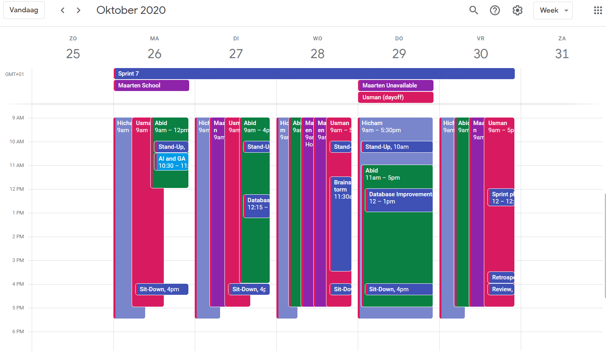
Figuur 1
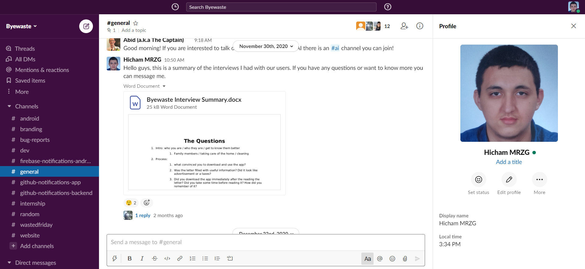
Figuur 2
Feedback
Ik heb mijn gevraagd collega’s om een Google formulier voor mijn in te vullen waar ik de volgende vragen stel: “Wat zou je Hichams afstemming aan het bedrijf becijferen?”, “Waarom heb je gekozen voor dit cijfer, wat betreft het afstemmen op het bedrijf?”, “Wat zou je Hicham becijferen voor het volgen van de procedures?” en “Waarom heb je dit cijfer gekozen, wat betreft het volgen van procedures?”.
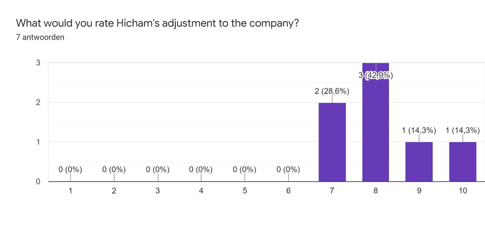
Figuur 3
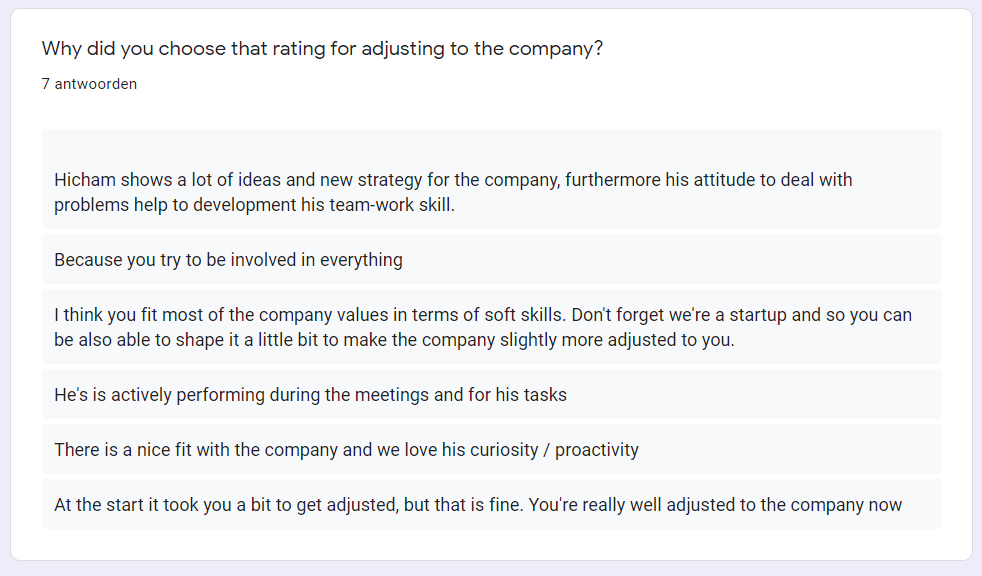
Figuur 4
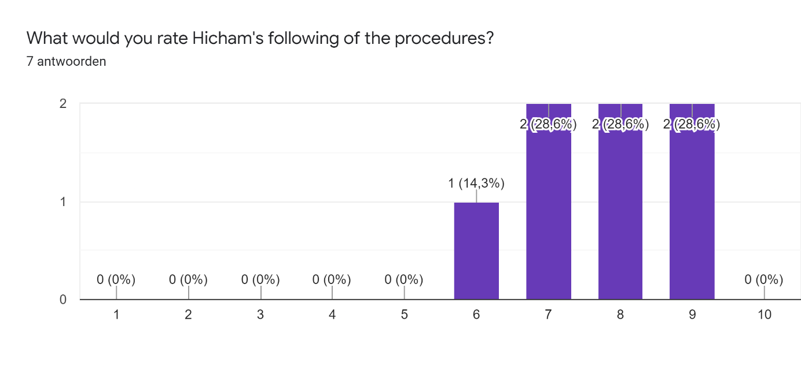
Figuur 4
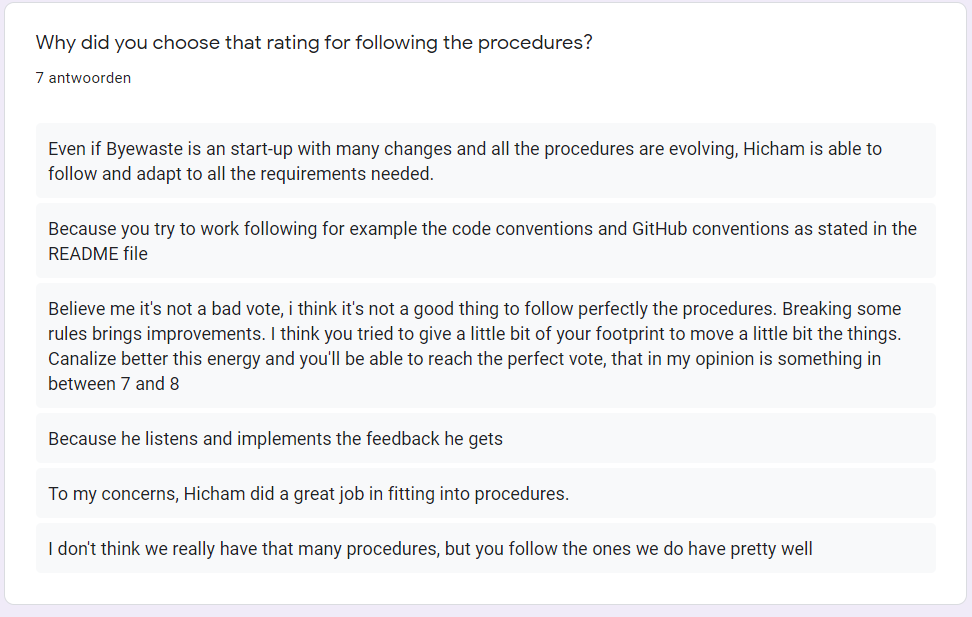
Figuur 5
Zelfreflectie
Mijn Collega’s vinden dat ik mij goed heb afgestemd op het bedrijf. Ik ben online op Slack als ik werk. En noteer netjes mijn beschikbaarheid op Google Agenda. Ik houd iedereen op de hoogte via Notion en GitHub. En ik was me al bewust van het Scrum proces. Dus mijn werkwijze heb ik gemakkelijk aan het bedrijf aangepast. Dit is ook terug te zien in de cijfers die ik krijg waar het laagste cijfer een 7 is. Mijn collega’s vinden dit omdat ik altijd actief mee doe en goed mij taken voltooi.
Mijn collega’s vinden doet ik de procedures voldoende volg. Iets dat me wel was koste op aan te passen was de manier waar de pull-reqeusts gestructureerd zijn. Hoe ik dit heb gedaan is te lezen bij leerdoel 1 van realiseren. Het derde antwoord van figuur 3 bleef mij wel bij. Mijn collega gaf mij een 6 voor het volgen van de procedure. Ik snap goed waarom hij dit heeft gekozen. Hij heeft mij vaker verteld dat ik altijd met te veel ideeën kom, zonder ze uit te werken. Dit is terug te zien bij leerdoel 1 van ontwerpen. Ik ben het ook eens met deze collega dat het perfect volgen van de procedures niet altijd een goed iets is. Als medewerker moet je altijd wel een beetje schuren met de regels van het bedrijf, dit zal ervoor zorgen dat ze op lange termijn beter worden, omdat de regels die overbodig zijn wegvallen. Daarom zegt mij collega ook dat een 7 of 8 het perfect cijfer is. Wat ik heb gedaan met deze feedback is terug te zien in mijn andere leerdoelen (leerdoel 1 van realiseren en leerdoel 1 van ontwerpen).
Ik stel altijd aan het einde van mijn Google formulieren de vraag of ze nog overige commentaren heb, meestal wordt dit leeg gelaten, maar voor dit geval heb ik een opmerking gekregen waar ik best trost op ben. Het is van een van de medeoprichters van het bedrijf.
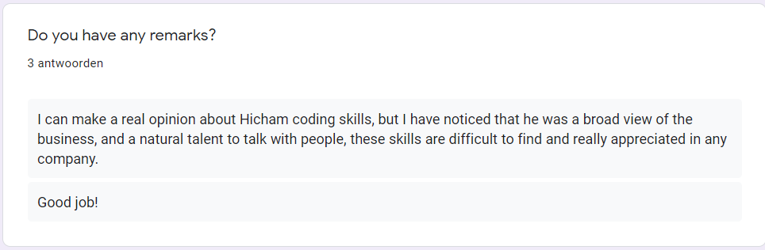
Figuur 6
Er is veel bewijslast dat ik kan leveren om aan te tonen dat ik mij heb afgestemd op het bedrijft wat betreft de werkwijze en procedures. Voorbeelden hiervan zijn dat ik een Notion account heb gemaakt om mijn collega’s op de hoogte te houden van mijn progressie van een featuere. Verder zijn er ook de GitHub pull-requests die ik heb gemaakt, die aan een aantal eisen moeten voldoen. Ik heb besloten om ander bewijslast te gebruiken om aan te tonen dat ik dit leerdoel heb behaald. En dat is het volgende mijn Google Agenda en mijn Slack profiel. Ik heb gekozen voor Google Agenda en Slack, omdat tijdens mijn stage we genoodzaakt waren om vanuit huis te werken. En om de hoogte te blijven van elkaar hebben we Google Agenda en Slack gebruikt.
Als bewijslast zal ik een screenshot laten zien van mijn beschikbaarheid in Google Agenda met de dat van de andere developers en de dagelijkse en of wekelijkse bijeenkomsten die we hadden. Slack is een communicatiehulpmiddelen dat het online communiceren en samenwerken makkelijker maakt. Als bewijslast zal ik hier ook een screenshot van laten zien. Tenslotte wil ik ook nog het volgende benoemen, en dat is dat leerdoel 1 van realiseren en leerdoel 1 van manage en control, ook gebruikt kunnen worden als bewijslast om aan te tonen dat ik mij heb afgestemd op de werkwijze en procedures van het bedrijf. Leerdoel 1 van realiseren toont dat ik mij op technisch vlak heb aangepast en leerdoel 1 van manage en control op het scrum gedeelte.
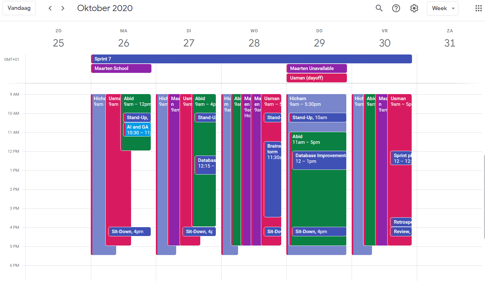
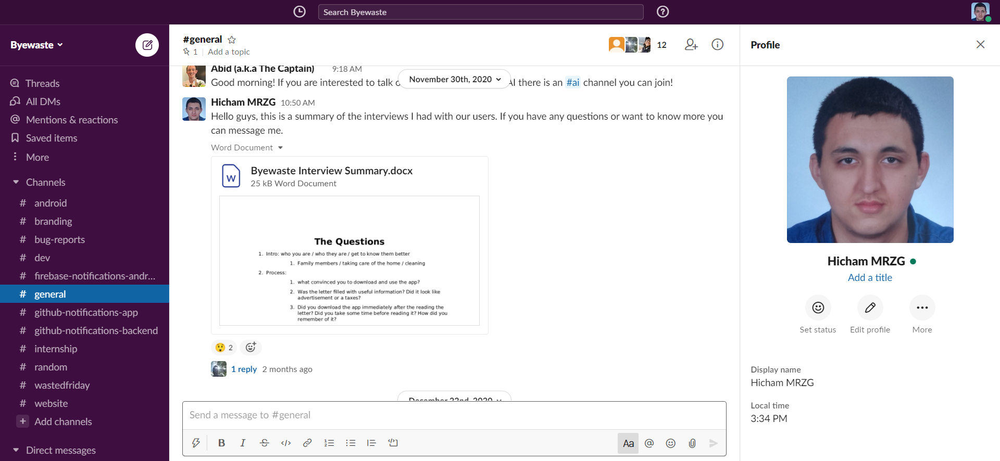
Feedback
Ik heb mijn gevraagd collega’s om een Google formulier voor mijn in te vullen waar ik de volgende vragen stel: “Wat zou je Hichams afstemming aan het bedrijf becijferen?”, “Waarom heb je gekozen voor dit cijfer, wat betreft het afstemmen op het bedrijf?”, “Wat zou je Hicham becijferen voor het volgen van de procedures?” en “Waarom heb je dit cijfer gekozen, wat betreft het volgen van procedures?”.
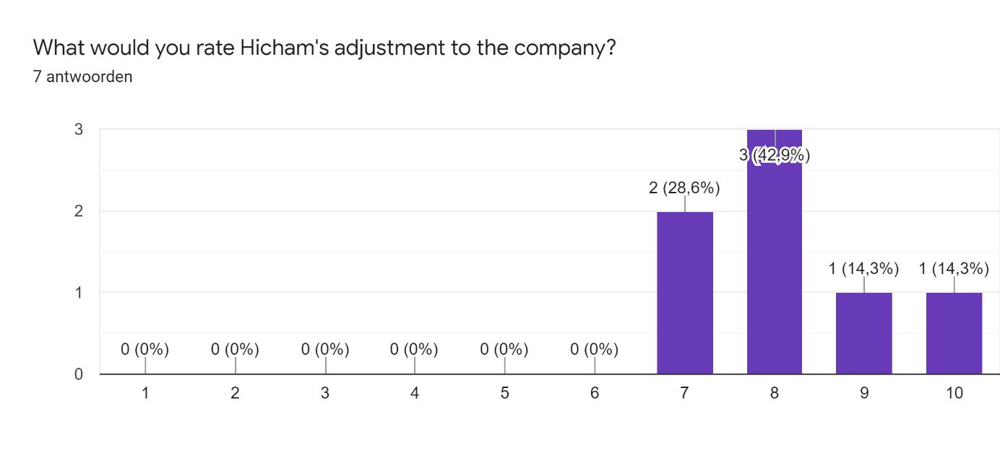
Figuur 3
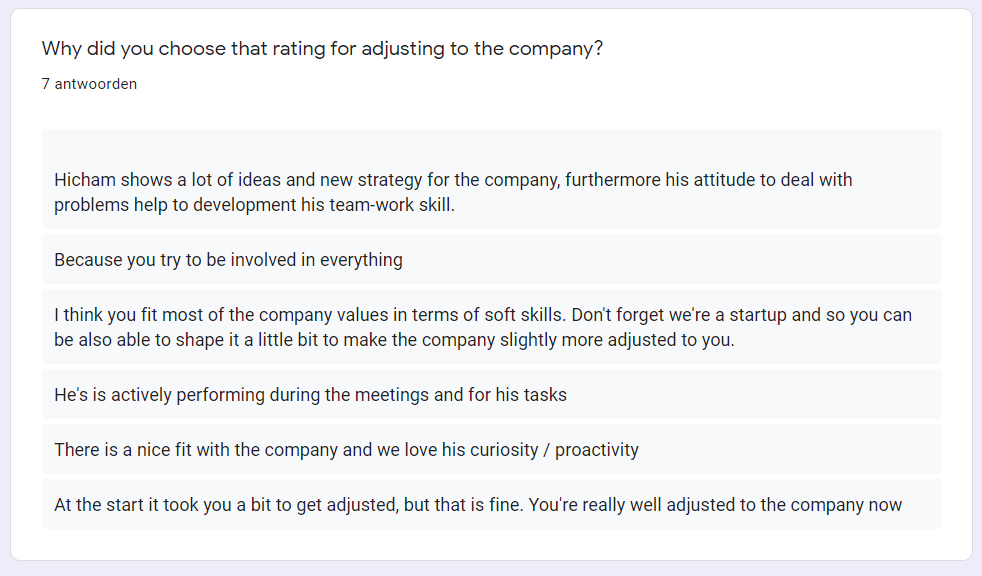
Figuur 4
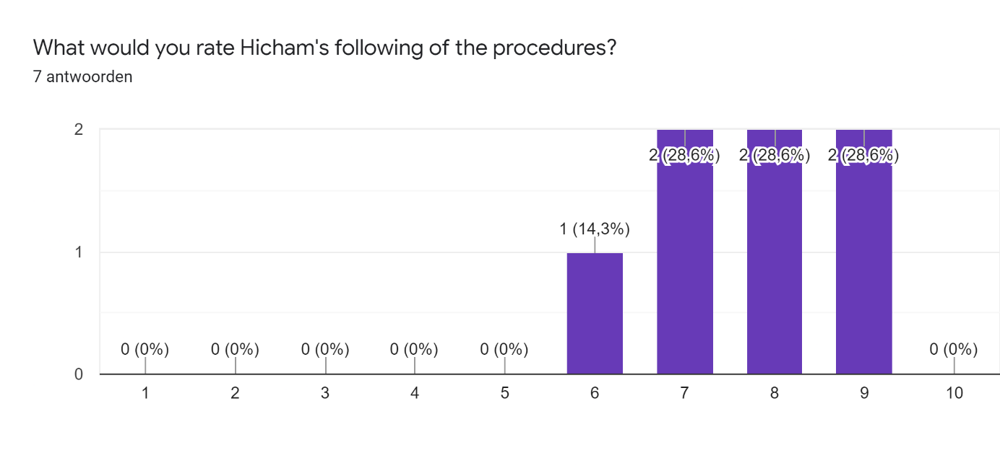
Figuur 4
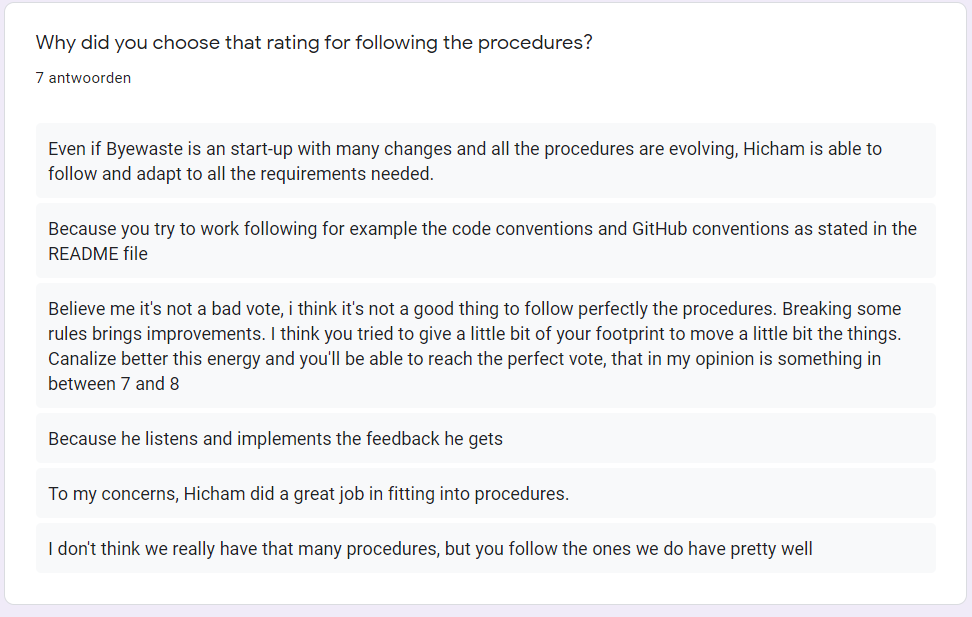
Figuur 5
Zelfreflectie
Mijn Collega’s vinden dat ik mij goed heb afgestemd op het bedrijf. Ik ben online op Slack als ik werk. En noteer netjes mijn beschikbaarheid op Google Agenda. Ik houd iedereen op de hoogte via Notion en GitHub. En ik was me al bewust van het Scrum proces. Dus mijn werkwijze heb ik gemakkelijk aan het bedrijf aangepast. Dit is ook terug te zien in de cijfers die ik krijg waar het laagste cijfer een 7 is. Mijn collega’s vinden dit omdat ik altijd actief mee doe en goed mij taken voltooi.
Mijn collega’s vinden doet ik de procedures voldoende volg. Iets dat me wel was koste op aan te passen was de manier waar de pull-reqeusts gestructureerd zijn. Hoe ik dit heb gedaan is te lezen bij leerdoel 1 van realiseren. Het derde antwoord van figuur 3 bleef mij wel bij. Mijn collega gaf mij een 6 voor het volgen van de procedure. Ik snap goed waarom hij dit heeft gekozen. Hij heeft mij vaker verteld dat ik altijd met te veel ideeën kom, zonder ze uit te werken. Dit is terug te zien bij leerdoel 1 van ontwerpen. Ik ben het ook eens met deze collega dat het perfect volgen van de procedures niet altijd een goed iets is. Als medewerker moet je altijd wel een beetje schuren met de regels van het bedrijf, dit zal ervoor zorgen dat ze op lange termijn beter worden, omdat de regels die overbodig zijn wegvallen. Daarom zegt mij collega ook dat een 7 of 8 het perfect cijfer is. Wat ik heb gedaan met deze feedback is terug te zien in mijn andere leerdoelen (leerdoel 1 van realiseren en leerdoel 1 van ontwerpen).
Ik stel altijd aan het einde van mijn Google formulieren de vraag of ze nog overige commentaren heb, meestal wordt dit leeg gelaten, maar voor dit geval heb ik een opmerking gekregen waar ik best trost op ben. Het is van een van de medeoprichters van het bedrijf.
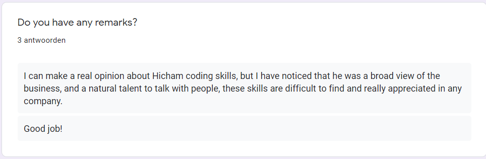
Figuur 6
Mijn Collega’s vinden dat ik mij goed heb afgestemd op het bedrijf. Ik ben online op Slack als ik werk. En noteer netjes mijn beschikbaarheid op Google Agenda. Ik houd iedereen op de hoogte via Notion en GitHub. En ik was me al bewust van het Scrum proces. Dus mijn werkwijze heb ik gemakkelijk aan het bedrijf aangepast. Dit is ook terug te zien in de cijfers die ik krijg waar het laagste cijfer een 7 is. Mijn collega’s vinden dit omdat ik altijd actief mee doe en goed mij taken voltooi. Mijn collega’s vinden doet ik de procedures voldoende volg. Iets dat me wel was koste op aan te passen was de manier waar de pull-reqeusts gestructureerd zijn. Hoe ik dit heb gedaan is te lezen bij leerdoel 1 van realiseren. Het derde antwoord van figuur 3 bleef mij wel bij. Mijn collega gaf mij een 6 voor het volgen van de procedure. Ik snap goed waarom hij dit heeft gekozen. Hij heeft mij vaker verteld dat ik altijd met te veel ideeën kom, zonder ze uit te werken. Dit is terug te zien bij leerdoel 1 van ontwerpen. Ik ben het ook eens met deze collega dat het perfect volgen van de procedures niet altijd een goed iets is. Als medewerker moet je altijd wel een beetje schuren met de regels van het bedrijf, dit zal ervoor zorgen dat ze op lange termijn beter worden, omdat de regels die overbodig zijn wegvallen. Daarom zegt mij collega ook dat een 7 of 8 het perfect cijfer is. Wat ik heb gedaan met deze feedback is terug te zien in mijn andere leerdoelen (leerdoel 1 van realiseren en leerdoel 1 van ontwerpen). Ik stel altijd aan het einde van mijn Google formulieren de vraag of ze nog overige commentaren heb, meestal wordt dit leeg gelaten, maar voor dit geval heb ik een opmerking gekregen waar ik best trost op ben. Het is van een van de medeoprichters van het bedrijf.
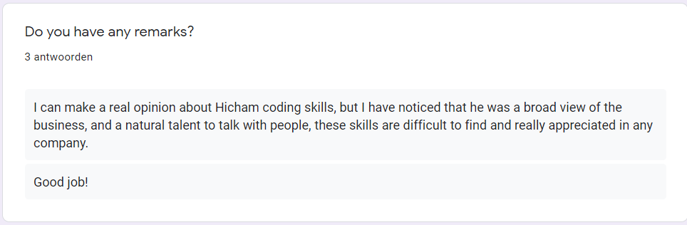